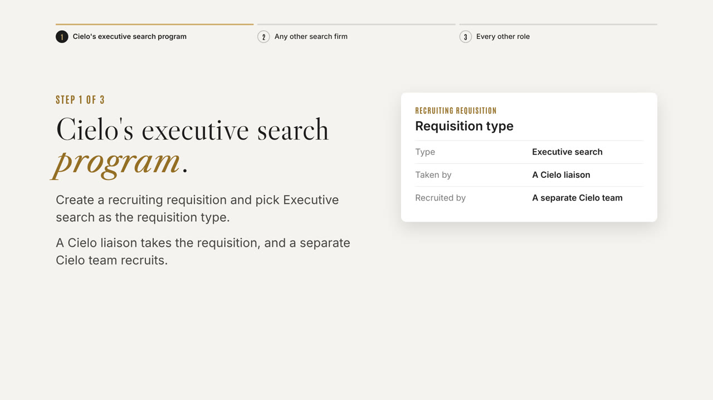

V.02 draftBuilt from SME sessions and Vanderbilt guides. Validate with the HCM group before release.
1 · Intro
When to use it.
Watch first, then read the details below. Narrated, with the steps captioned on screen. A training simulation with fictional names, built from standard Oracle screens; Vanderbilt's screens may differ slightly.
Most staff recruiting runs through Cielo, Vanderbilt's recruiting partner, which focuses on roles at M4 and below. Executive roles usually go to a search firm, and that changes how the requisition is created.
Use this whenThe role will be filled through an executive search or an outside search firm.
2 · Walk through
Step by step.
Follow along in Oracle Recruiting. Check off each step as you go.
Watch-outs
Confirm with central recruiting before you start an executive search.
Official documentation
Vendor documentation describes the standard process. Vanderbilt's setup, codes, and rules in this course take priority.
Use when: The role will be filled through an executive search or an outside search firm. · System: Oracle Recruiting
Cielo's executive search program: a recruiting requisition marked Executive search.
Any other firm (for example, Korn Ferry): a PO requisition, not a recruiting requisition.
Everything else: Standard or Abbreviated.
Watch-outs
Confirm with central recruiting before you start an executive search.
V.02 draft, updated Nov 18, 2026. Owner: HRIS. Sources: HCM training session 2, requisitions and assignment changes, Sep 9, 2026.Questions: pcb@vanderbilt.edu
HCM Academy detailed job aid · Hiring
Executive or external search, step by step
Step by step with screenshots. Screens from the HCM Academy training simulation of Oracle HCM. Names are fictional; check labels against Vanderbilt's Oracle.
01Cielo's executive search program: a recruiting requisition marked Executive search.
Pick Executive search as the requisition type. A Cielo liaison takes the requisition and a separate Cielo team recruits.

02Any other firm (for example, Korn Ferry): a PO requisition, not a recruiting requisition.
Outside firms are paid differently, so the search can't be a requisition in Oracle Recruiting. Work with your procurement contact on the PO.
03Everything else: Standard or Abbreviated.
Executive search isn't for regular roles. See Create a requisition.
V.02 draft, updated Nov 18, 2026.Questions: pcb@vanderbilt.edu
Course record
Owner and changes.
Owner
HRISRecruiting and hiring, assignment changes, offboarding, leave, records and reporting, and the HCM foundations.
Version
V.02 draftUpdated Nov 18, 2026
Review
Built from SME sessions and Vanderbilt guides. Validation by the HCM group is pending.
What changed
Nov 18, 2026Video and job aid rebuilt on the Oracle screens, from Oracle's documentation; steps outside Oracle stay as cards.
Nov 17, 2026Added a narrated video and a detailed job aid with a picture for each step.
Nov 13, 2026Owner is now HRIS. It was shown as Recruiting and Hiring.